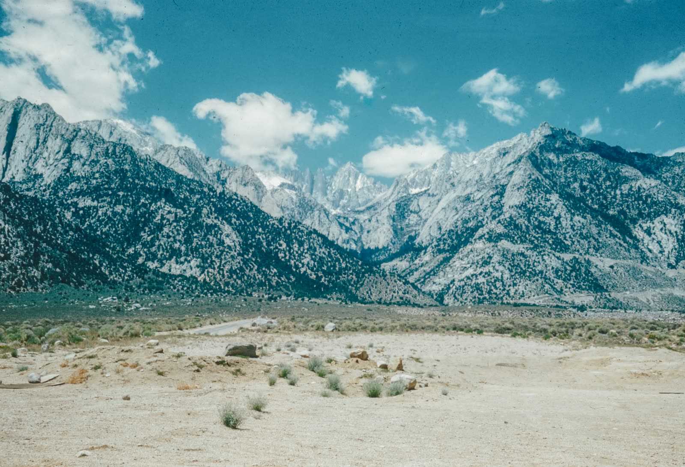

The 1983 BMW 3 Series E30 is one of the most celebrated platforms in automotive history — and one of the most demanding to restore. This project began as a curiosity and grew into a full mechanical resurrection, pursued alongside my brother with the goal of bringing a neglected chassis back to its original condition.
Before touching a single bolt, I spent weeks in deep research — studying the E30's mechanical architecture, consulting automotive specialists, and sourcing period-correct tools and materials. The planning phase was as rigorous as the fabrication itself, reflecting the same methodology I apply to every engineering challenge.
The restoration process started with a full disassembly to expose the true condition of the car's structural and mechanical systems. What we found demanded serious intervention: compromised chassis sections, significant rust penetration, and worn drivetrain components. Each issue became an opportunity to learn.
This project isn't just about a car — it's a living classroom. Every seized bolt and corroded panel has taught me something that no textbook could: the patience required for precision work, the discipline of systematic problem-solving, and the satisfaction of watching something broken become functional again.
In Progress — Active Restoration